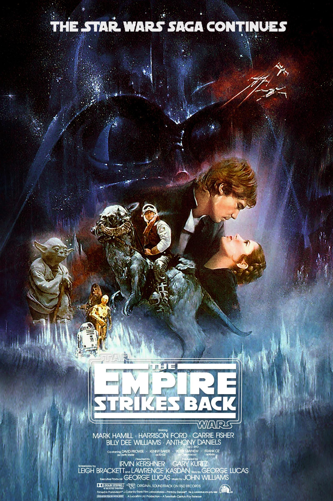
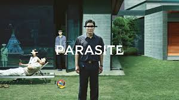

Good Will Hunting

Will Hunting has a genius-level IQ but chooses to work as a janitor at MIT. When he solves a difficult graduate-level math problem, his talents are discovered by Professor Gerald Lambeau, who decides to help the misguided youth reach his potential. When Will is arrested for attacking a police officer, Professor Lambeau makes a deal to get leniency for him if he will get treatment from therapist Sean Maguire.
The Empire Strikes Back
The epic saga continues as Luke Skywalker, in hopes of defeating the evil Galactic Empire, learns the ways of the Jedi from aging master Yoda. But Darth Vader is more determined than ever to capture Luke. Meanwhile, rebel leader Princess Leia, cocky Han Solo, Chewbacca, and droids C-3PO and R2-D2 are thrown into various stages of capture, betrayal and despair.
Parasite
All unemployed, Ki-taek’s family takes peculiar interest in the wealthy and glamorous Parks for their livelihood until they get entangled in an unexpected incident.